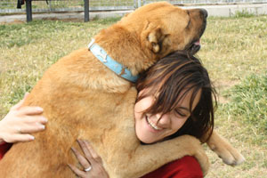

Apadrina y una mascota
 Apadrinar un perro o gato consiste en hacerse cargo de parte del costo que ocasiona su cuidado en nuestro centro, y que puedes ir a visitarlo cuando quieras, siempre que esté allí algún voluntario, ayudarlo a pasear a alimentar cuando quieras, como andar con correa, que le ayudaran para integrarse mas fácilmente cuando sea adoptado y sobre todo darle el amor que tanto requiere, estar con él, de forma que al animal le haces pasar un buen rato y tú también disfrutas con él y haces ejercicio en contacto con la naturaleza. Y si el perro o gato que apadrines es adoptado, puedes pasar a ser el padrino de otro animal de nuestro centro que tú elijas.